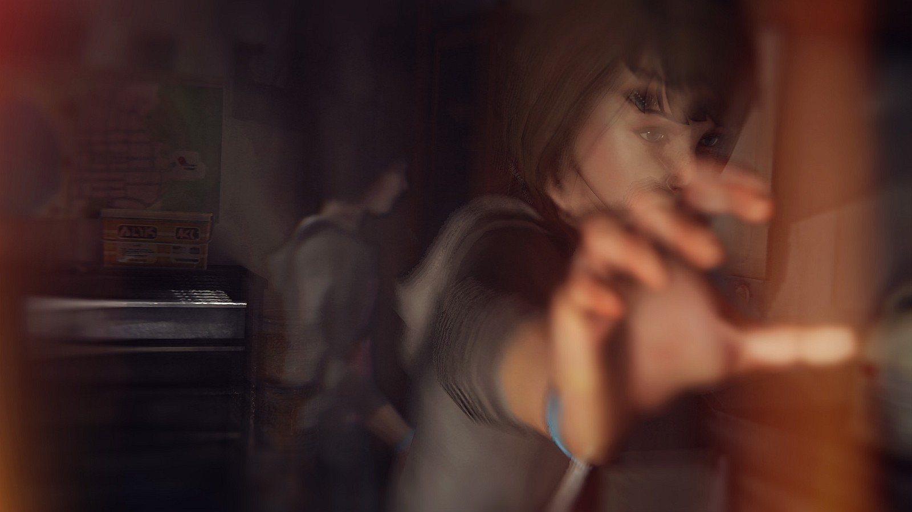

“Somebody is lying. The board never does.”
On April 22, 2013, Blackwell Academy's brightest student vanished from Arcadia Bay. The police gave up. This website reopens her case as an interactive investigation board: open the evidence files one by one, follow the red string — and unseal the truth yourself.
An interactive fan project by S M Tanbin Kawnin Raj, based on the story of Life is Strange
Before the board, know the girl. Everything in this case begins — and ends — with her.
Age 19 · Blackwell Academy student
Missing since April 22, 2013
Last seen: Arcadia Bay, Oregon
If you know anything — open the board below.
| Full Name | Rachel Dawn Amber |
| Age | 19 |
| School | Blackwell Academy — top student, drama star, Vortex Club member |
| Dream | To leave Arcadia Bay and become a model/actress in Los Angeles |
| Closest Friend | Chloe Price — who refused to believe she simply ran away |
| Last Known Movements | Seen around Blackwell and a Vortex Club party in April 2013 — then nothing. No body, no note, no goodbye. |
| Official Status | Police investigation stalled. Presumed runaway. Chloe Price never accepted that. |
When Max Caulfield returned to Arcadia Bay in October 2013, Chloe dragged her into the search. Neither of them knew that the town's most respected man was hiding a bunker, that the richest family in town was hiding a crime — or that Rachel had been close to them, in every sense, all along.
🗂️ 1. Open the files. The board below holds 9 sealed evidence files. Click any file to read it — a pin drops on the board.
🧵 2. Follow the red string. Every file ends with the connection it reveals. Watch how the string pulls Frank, Nathan, David and Jefferson into one picture.
🔓 3. Unseal the truth. Open all 9 files and the sealed verdict at the bottom of this page unlocks — the full story of what happened to Rachel Amber, and every suspect's final status.
Nine files. Nine pins. One red string. Click a file to open it — your progress is saved in this browser, so you can leave and come back.
Four men circled Rachel Amber's last months. Their final status stays hidden until the case is solved — open all 9 evidence files to reveal it.
Supplied half of Blackwell's parties and kept Rachel's secrets closer than anyone. His RV holds the case's first real clue.
Rich, unstable, and obsessed with Rachel. Drugged Kate Marsh at a Vortex Club party — and his money bought silence all over town.
Ex-soldier who photographed students, kept files on Rachel, and installed cameras everywhere. Protector — or stalker?
Blackwell's beloved celebrity professor. Rachel adored his work. Nobody in Arcadia Bay would ever suspect him of anything.
How a missing poster became a murder case in one October week.
Last seen around Blackwell Academy. No note, no packed bag that fits a runaway. Posters go up all over Arcadia Bay.
Police settle on "runaway". Chloe Price doesn't. She fills her room with clippings, maps and questions nobody will answer.
Max Caulfield returns to town, saves Chloe from Nathan's gun in the Blackwell bathroom — and the two friends restart the search together.
Kate Marsh, drugged and filmed at a Vortex Club party, nearly dies on the dormitory roof. Max saves her — and recognises Rachel's pattern in Kate's story.
Inside Frank Bowers' motorhome: Rachel's bracelet, her photos, her letters. The town's scariest man was the person Rachel trusted most.
Frank's ledger, David's files and Nathan's phone align on one location: the Prescott barn. Beneath it — the Dark Room. And at the junkyard, the search for Rachel ends.
Max escapes the Dark Room, David storms the bunker, and the most respected man in Arcadia Bay is dragged into the light.
Everything above was clues. This is the answer.
This file contains the full truth about Rachel Amber's death and the final status of every suspect. It unseals automatically when you have opened all 9 evidence files on the board.
9 FILES REMAINING
What really happened to Rachel Amber. In the spring of 2013, Rachel fell into the orbit of Mark Jefferson — the teacher she idolised. Jefferson, funded and shielded by the Prescott family, ran a hidden photographic bunker under the Prescotts' old barn: the Dark Room. There, with Nathan Prescott as his unstable apprentice and supplier, he drugged young women and photographed them, filing each victim in a labelled red binder.
Rachel became one of those files. During a session, Nathan — desperate to imitate his mentor — gave Rachel an overdose, and she never woke up. Jefferson, protecting his art, his reputation and his patron's son, disposed of her body in the one place he believed no one would ever dig: the town junkyard — metres from the hideout where Rachel and Chloe had spent their happiest days. For six months, Chloe walked past her best friend's grave without knowing.
The discovery. On October 10, following the aligned clues, Max and Chloe found the shallow grave at the junkyard — and Jefferson found them. He shot Chloe and took Max to the Dark Room, where Nathan already lay dead by Jefferson's hand. Max's escape and David Madsen's assault on the bunker ended it: the binders, the bunker and the grave told the rest.
Responsible for Rachel Amber's death: an accidental overdose while assisting Jefferson's sessions. Later murdered by Jefferson himself. A perpetrator who was also a victim — of his father's neglect and his teacher's grooming.
The mastermind. Built and ran the Dark Room, drugged and photographed multiple students, concealed Rachel's death, murdered Nathan. Arrested after the bunker raid — the most trusted man in town was its monster.
Cleared. Rachel's secret partner, not her killer. His bracelet clue and his decoded ledger were the evidence that cracked the case.
Cleared. His obsessive surveillance was a clumsy, one-man investigation to protect Blackwell's students — and in the end he was the man who stormed the Dark Room.
Rachel Amber wanted to see Los Angeles. She got a missing poster, a red binder and an unmarked grave — but she also got two friends who refused to stop digging. Case closed.

| Project Type | Interactive detective case-board website (single-page web app) |
| Content | The real Rachel Amber case from Life is Strange (DONTNOD Entertainment / Square Enix, 2015), retold as an investigation |
| Interactivity | 9 unlockable evidence files · progress tracking with saved state · suspect status reveals · sealed verdict that opens only when the case is solved |
| Built With | HTML, CSS & JavaScript — one single file, no frameworks, no build step |
| Hosting | GitHub Pages (free static hosting) |
| Created By | S M Tanbin Kawnin Raj — a fan-made student project for learning & portfolio |